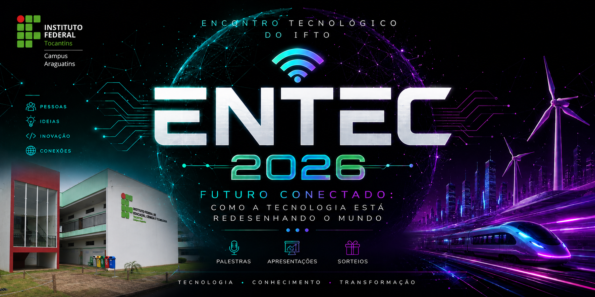

O ENTEC — Encontro Tecnológico — é um evento realizado pelos alunos do 3º ano do curso Técnico em Redes de Computadores integrado ao Ensino Médio do IFTO — Campus Araguatins. Há mais de cinco anos, o encontro faz parte da trajetória do curso, reunindo alunos, professores e convidados em uma programação voltada à tecnologia e aos conhecimentos desenvolvidos durante a formação.
A cada ano, o ENTEC ganha uma nova identidade. Temas, ambientação e atividades são renovados para criar uma experiência diferente para quem participa. Tecnologia, cultura e criatividade se encontram na programação, permitindo que assuntos estudados ao longo do curso sejam apresentados de uma forma mais dinâmica e próxima do público.

O evento é também uma oportunidade para os próprios alunos colocarem em prática o que aprenderam. Da organização à realização das atividades, a turma participa diretamente da construção do ENTEC, assumindo responsabilidades e trabalhando em conjunto para transformar o planejamento feito durante o ano em um evento aberto à comunidade.
Ao longo de sua história, o ENTEC já recebeu palestras, minicursos, apresentações, jogos, concursos, sorteios e outras atividades. A programação muda a cada edição, acompanhando tanto as propostas da turma responsável quanto os novos assuntos e tendências que surgem no universo da tecnologia.
Mais do que apresentar conteúdos técnicos, o ENTEC representa um dos momentos que marcam a conclusão do curso de Redes de Computadores no Campus Araguatins. É quando conhecimento, criatividade e trabalho em equipe saem da sala de aula e ganham espaço para serem compartilhados com outras pessoas.